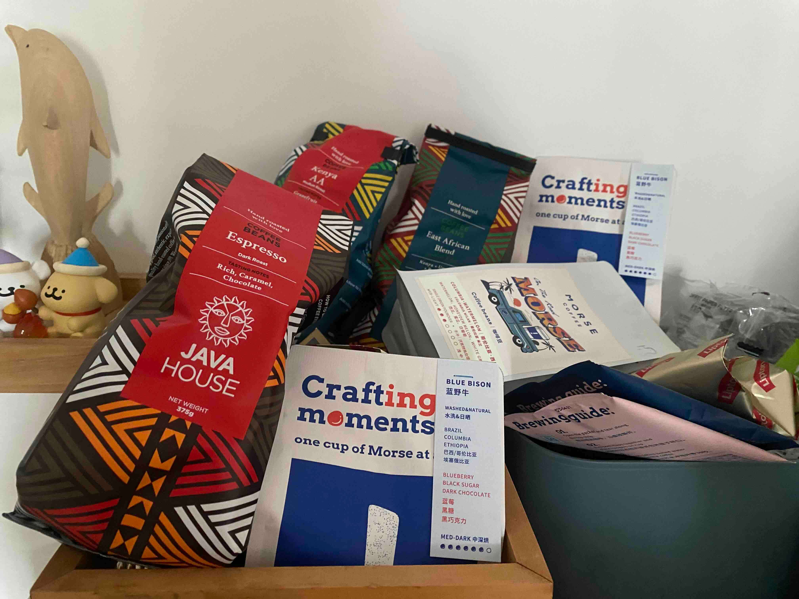
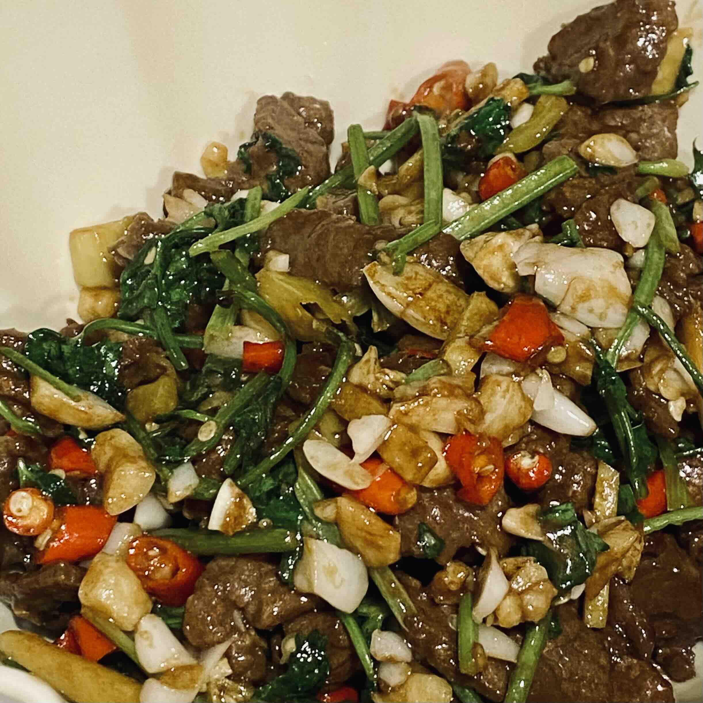

Zine#38
距离上一次更新 weekly，过去快一个月了。前阵子状态不太好，还加班了 2 个休息日，既没有时间，也没有写的心情，就搁置了。
重新捡起来，把之前积累的链接全部清空了，所以这期的内容还挺多的。
鉴于我无法保持周更，weekly 这个名字又暗含了一种周更的承诺，如果读者对其有期待，恐怕会让读者的期待落空，甚至可能产生些许不满。
The two types of open source 讲述了关于开源项目中的期待问题，我觉得也适用于很多场景，例如写 weekly。
所以我打算改一下 weekly 的名字，降低读者对于 weekly 的期待值，也降低我的焦虑值。没有周更的压力，或许更新频率更快，或许周期拉得更长，总之 take it easy。
但是起一个什么样的名字好呢？
因为文章内容大多数是一些杂七杂八的链接和个人想法，既然这么杂乱，就叫「杂志」吧，考虑到可能用作文件名，最好是用英文，那就叫「Zine」吧。
如果你有看到什么错误，或者有什么更好的建议，欢迎留言或给我 发邮件 ～
新一期 Zine，希望你看得开心啦～
｡:.ﾟヽ(*´∀`)ﾉﾟ.:｡
琐碎二三事
六月底离职了，现在七月份第一个星期也过去了，时间过得很快。
计划放个暑假，调整一下身体和作息，处理掉一些堆积的事情，学点东西，做点面试准备，有时间或许去香港四大径走走。
不知道是不是休息时间太少，锻炼也少，平时也经常久坐，近期身体总觉得有些不舒服。
前些天也去体检了，到时看看体检结果，对于一些不舒服的地方也找时间去医院检查一下。
关于体检，这次没有去体检机构，而是选择了附近的医院，检查项和价格都相近。
医院的一个好处是，它是去到了再选择体检套餐，医生会问你的一些近况，推荐一些额外的检查项，或许会更有针对性一些。
医院体检的地方是一个体检中心，没有体检机构那么大，人也相对不是很多（可能因为我是工作日去的），体验还行。
另外，付款也可以用个人医保里的钱，不是从自己银行卡里支出，会有种体检很便宜的感觉。（虽然个人医保也是自己缴纳的钱）
最近开始每天跑步，一方面提高心肺能力，增加体力，另一方面看看能不能减减肥，把肚子上的赘肉去掉一些。
很久不跑步，跑三公里也累得够呛，而且天气比较热，每次跑完都是一身汗。
跑步的时候一般会听听播客，跑步时只需要关心迈步和呼吸，有一种专注的感觉，虽然累，但也享受这个过程。
分享一下最近听的：
前一天跑步，特别累，就很想喝一口冰可乐，莫名地又想到了麦当劳，于是跑完步之后就去麦当劳买了鸡翅和麦旋风。
彼时彼刻，吃到热乎香脆的鸡翅，喝上一口甜甜的冰饮，感到非常的满足，无效的运动，有效的快乐。不过快乐是有代价的，太晚吃了太多东西，晚上睡觉时感觉胃不太舒服，以后还是要控制一下。
关于离职，是对公司的一些人和事无法忍受，会给自己带来一些内耗，很多次忍耐之后，终于是决心离开了。
不过谁知道下一家公司会如何呢？
不管是什么公司，都会有一些自己不喜欢的事，是需要自己去想办法适应、尝试改变和调整心态的，或者实在接受不了，那就离开。
毕竟我只能处理好自己的事情，做好自己，至于别人，我可以尝试去影响，但强求不来。
听众来信 #21 如何克服工作中的心理落差，比如脏活累活、朝令夕改？ 这期播客也讨论的类似的问题。
说起来，这已经是我第三次 gap 了。
第一次是换了工作城市，虽然拿到了 offer，但是因为一些背调问题导致没法马上入职，就等了一段时间。
那段时间也是疫情比较严重的时候，不能到处走，每天还要去村里的篮球场验核酸。
在家里也没啥事，就开始锻炼身体，跟着老弟一起锻炼，也是练出了一身肌肉线条，只是后来工作累了没能坚持下来，线条就消失了。
闲来无事时，阳光正好，就搬一把椅子到阳台看书，那段时间里也读了不少的书，虽然窝在家里，但是看诸如《孤筏重洋》的故事，仿佛也在海上漂流过。
不知不觉就过了个年，背调的事情依然没有进展，所以决定准备一下重新面试，不觉间就过去了五六个月。
回过头来，最怀念的就是那段时间每天坚持的锻炼，让身体状态好了不少。
第二次 gap 则是因为裁员，疫情也还没过去，因为是第一次经历裁员，有点受到打击，缓了一阵子，那段时间经常去欢乐港湾的海边吹风，喝点啤酒。
但因为租房，每个月要交不少的房租，又没有收入，所以还是得赶紧找到新工作。
话虽如此，gap 了也近两个月，期间也是在家里锻炼，买了些书研究了一下手冲咖啡，自学了一阵子的木吉他（但没学会）。
第三次也就是现在了。
如果没有经济压力，不考虑就业中对于 gap 的歧视，gap 一小段时间也是挺好的。
利用一些时间休息，锻炼，出去玩玩，再回到工作状态，会更有干劲。
（不过也可能在 gap 期间找到想做的事情，而不再想工作了？）

前阵子女朋友去非洲旅游回来，给我带了 3 包咖啡豆，等喝完这些豆子就重新出发吧。
之前还回了趟家，整理书籍的时候翻出了大学时买的 kindle，充电后发现竟然还能正常工作。
本来还种草了一些阅读器，既然 kindle 能用就继续用着吧，本身最大的功能就是阅读，够用了。
把玩 kindle 的时候，发现它还提供了一个试验性的浏览器，拿来访问了一下自己博客，除了一些样式和 JS 无法加载外，倒也能正常看 ( ˘ω˘ )
在家也一个星期了，除了下楼跑步，很少出门，时间长了，会有一点「生无可恋」的感觉，躺在一边，什么都不想做。
看到一些远程开发的开发者经常待在家里，也会因为社交少而有一些孤独感。
如果长期不出门，不和其他人产生一些联系，某种意义上，是不是也把自己关进了一个「小黑屋」里呢。
偶尔还是出个远门吧。
因为没有工作，也就没有收入，所以最近也尽可能自己做饭，节省开支，跟着小红书上的菜单做了几个菜，自我感觉还挺好吃。
现在买菜基本都是从小象超市叫外卖，起送价格是三十几，有时做的菜量多，两个人一天也就四五十块钱；有时菜量少，可能就需要买两顿的食材，再凑单免配送，就逼近七八十一天。
总的来说，自己买菜做饭还是要比点外卖或外面吃饭性价比更高，用料上也可以更健康一些。

News | Article
不带相机, 培养记忆而非快照
看到美丽的景色，在一些有纪念意义的时刻，人们往往会想用相片或视频记录下来。
可是在拍摄的时候，注意力往往都会集中在如何拍摄好这件事情上，而不是去欣赏和感受当下美丽的事物。
那些记录下来的东西，往往记录完就放在一边，或许以后某个时刻会翻到，或许永远都不会再看一次。
与其如此，不如活在当下，活在此刻，让那些美好的时刻留在记忆里，让那一刻的感动刻回忆里，而不是照片里。
摘录
我在家乡 Chapel Hill 不带相机，虽然手机里有相机，但我只用它拍快照。
自然，有些时刻我也希望自己带着相机。
一次黄昏时分，我在邻里散步，感到空气中有一种奇异的能量涌动，突然，不超过二十英尺远处，一只雄伟的白尾鹿跃过花园围栏，飞奔在渐暗的街道上。
即使那一刻正在发生 ⸺ 这出乎意料的超自然时刻 ⸺ 我也试图把它想象成一张照片。
我们就是这样被教导去思考的。
「哦，我真希望我带了相机！」但这意味着我本应准备好捕捉那一刻，而不是被它惊吓。
然而，被美丽惊艳是一种独特且极为罕见的人类天赋。
照片是在我从惊讶中回过神来，开始摆弄相机时才出现的。
接下来的几天里，我一直在思考我儿子的出生。
我当时就在房间里，但我真的在那里吗，还是躲在了相机后面？
我希望医生们尽一切必要的努力让我的孩子安全降生，但我也同样希望他们 ⸺ 这同样重要 ⸺ 不要破坏我的照片。
如果出了什么差错，Susan 绝望地环顾房间寻找我，她会看到一个男人把一个黑色的盒子举到眼前。
这个画面象征性地留在了我的脑海中。
这都是很久以前的事了。
那时我正在学习如何使用相机。
和朋友散步时，我会打断一场愉快的谈话去构图。
我控制不住自己。
那时我还没有形成内在的视角，没有自己独特的观察方式，所以一切在视觉上都显得合理。
我也还没意识到，一场好的谈话 ⸺ 随着时间推移会越来越少 ⸺ 比眼角余光中看到的有趣对称更重要。
不过，我的朋友们还是容忍了我的「艺术感」，容忍我突然的走神。
直到我儿子出生，我才开始衡量当我举起相机对准远处拍摄时，自己和朋友之间产生了多远的距离。
在我决定不再随身携带相机与朋友相处的那天，这段距离被我消除了。
正如我在回顾展上对质疑我的摄影师所说：「我不能同时做两件事。」
如今，在我们的智能手机世界里，我的摄影注意事项已经过时，而且坦率地说，是不可理解的。
手机中存储的上万张照片是对我在摄影上的漫不经心的极大反驳。
这些照片 ⸺ 将我们锁定在某些时刻，通常是精心安排的上镜时刻 ⸺ 可能扭曲我们回忆过去的方式。
那些照片之外的空白，可能才是记忆最肥沃的土壤。
The Curse of Knowing How, or; Fixing Everything
作者比喻软件开发就像是西西弗斯推着巨石，软件需要不断地改进，修复，但最终还是会腐化。
如果执着于把软件修复到没有任何问题，那可能就会让自己承担太多的责任，而不堪重负。
要学会放手，学会在什么地方停下来，学会让它们保持破碎。
摘录
就像加缪笔下的西西弗斯一样，我们注定要推动我们自己系统的巨石上山 ⸺ 一次修复，一次重构，一次脚本。
但与西西弗斯的故事不同，诅咒不是由神降加于你的。我们自己建造了这块巨石。而且我们还在上山的路上不断打磨它。
我已经数不清有多少个项目是以 「是的，我可以做得更好」的变体开始的。
- 一个静态站点生成器，因为现有的生成器有太多的主观意见。
- 一款笔记工具，因为我不喜欢其他工具构建元数据的方式。
- 一款 CLI 任务运行器，因为 Make 晦涩难懂，而 Taskfile 简直是 YAML 地狱。
- 一个用 Rust 写的个人维基引擎，然后用 Go 写，然后用 Nim 写，最后又回到 Markdown。
- 一个家庭实验室仪表盘，因为我不喜欢臃肿的 Web 应用。
这个清单还在继续，相信我，它确实在继续。
我的开发目录目前已经接近 30 GB。
如果你问我，我当时是在解决真实、纯粹的问题。
但事后看来，我也在滋养着别的东西：一种掌控的欲望。
我构建的每一个新工具都是我拥有的沙盒：没有奇怪的 bug。
没有遗留的限制。
没有我不完全同意的决定。
当然，直到我变成了遗留问题。
软件的问题不会永远解决。
你写下的每一个解决方案，从它诞生的那一刻起就开始腐朽。
不是现在，也不是以后，而是最终。
库被废弃。API 发生变化。性能出现回退。
你曾经完美的工具悄无声息地坏掉了，因为 libfoo.so 现在变成了 libfoo.so.2。
延续用文学引用充实这篇文章的主题，让我引用斯多葛派的 Marcus Aurelius。
你对自己的心智能力拥有掌控权 ⸺ 而非外部事件。
意识到这一点，你将找到力量。
但编程诱使我们相信我们可以控制外部事件。痛苦也正从这里开始。
这里发生着更深层次的事情。这不仅仅是关于软件。
我相信有时构建东西是我们自我安慰的方式。
我们编写一个新工具或脚本，是因为我们迫切需要一次小小的胜利。
我们写新工具，是因为感到不堪重负。
重构它，不是因为代码凌乱，而是因为你的生活凌乱。
我们追求完美的系统，因为当一切都在旋转时，它给了我们一个可以抓住的东西。
这是我从使用 NixOS 中得到的教训。
我曾写过整个应用程序，只是为了避免思考自己为何不快乐。
编程给你即时反馈。
你运行程序，它就能工作。
或者不工作，你就修复它。
无论哪种方式，你都在做些什么。
那种能动性令人上瘾。
尤其是当生活的其他方面无法提供这种能动性时。
我们编程是因为我们能编，即使不该编。
因为至少它给了我们一个反抗的对象。
倦怠不仅仅来自过度工作。它来自过度承担责任。
而编程，一旦深深内化，就会让一切都感觉像是你的责任。
臃肿的网站。低效的脚本。你工作的笨拙入职流程。
你本可以修复它们。那么，为什么你没有呢？
你非常清楚的事实是，你无法修复所有问题。
你知道这一点，无论你的技能水平如何，你一直都知道。
但试着告诉你大脑中那个将每一个低效视为道德缺陷的部分这点。
尼采 (Nietzsche) 警告过不要长时间凝视深渊。
但他并未警告当深渊是一段 Makefile 或一个三万行代码的 Typescript 项目时会发生什么。
那么出口在哪里？
这是否类似于 萨特 Sartre 所描绘的地狱，地狱是他人以及他们与你的软件的互动？
还是某种奇怪的反向地狱，人们创造的软件你不得不去互动？
第一步是认识到并非所有破损的东西都需要你去修复。
不是所有工具都需要更换。
并非每次糟糕的经历都需要采取行动。
有时候，仅仅使用那个东西就足够了。
有时候，知道它为什么坏了 ⸺ 即使你不去修理 ⸺ 也已经足够了。
有时候，你能做的最有纪律的事情就是放下那个你知道如何解决的问题。
这其中蕴含着一种力量。
不是冷漠，不。也不是懒惰。只是 ⸺ 某种克制。
你学会了编程。你学会了修理东西。但你将学到的最难的事情是，什么时候该让它们保持破碎。
也许这才是最具人性的技能。
30 minutes with a stranger
作者做了一个研究，找了很多人，他们有不同性别、年龄、学历、人种、政治倾向，让他们进行聊天。
一开始大家都觉得会有不好的体验，但聊到后面发现大多都得到了积极的体验，无论两个人有多大的差异。
结论是，大多数情况下，如果和一个陌生人展开一次对话，往往能得到积极的，友好的体验。
作者还分享了一件在地铁中发生的事，一个男孩摔伤了，一边流血一边哭，但是地铁上没人帮他。
于是作者给他递了纸巾，告诉他用纸巾止血。男孩觉得很震惊。
当作者纸巾用完了，这个时候其他人也开始来帮他，提供了消毒纸巾，绷带等。
等作者下车了，后面也依然有人照顾男孩。
面对一个陌生人需要帮助，有的人可能无动于衷，觉得不是自己的事情，也可能嫌麻烦不想提供帮助。
可是，如果那个需要帮助的人是自己呢？
和陌生人展开一次对话，大多数是积极的；和陌生人产生联系，大概率也是积极的。
或许下次碰到有需要的陌生人事，不用担心那么多，而是去接近他，帮助他。
我想，在一个人人互相帮助的世界里，比在一个人人只顾自己的世界里，会更安心和幸福吧。
BTW，网站交互做得很棒，推荐看看原文。
摘录
社会信任对于我们应对未来一些最大的挑战至关重要：民主的侵蚀、人工智能的出现、地球变暖等等。
在 2021 年的一项研究中，研究人员探讨了社会信任为何在个人层面上下降。
他们发现，收入不满、失业经历以及我们对政治机构信心的下降，是信任减少的主要原因。
简而言之，我们创造了一个对大多数人来说不稳定且充满不确定性的世界。
我也有同感。
世界上发生的大事小事让我感到害怕。
我感觉周围的环境在崩塌，安全感在减弱。
我曾看过一些偏远地区的房子，想着和朋友家人一起隐居在那里 ⸺ 在那里我不必依赖陌生人。
几个月前，我乘地铁去上班时，一个 16 岁的男孩在地铁站台滑倒，嘴巴撞到了地面。
他跌跌撞撞地上了车，站在我旁边。
我戴着耳机，试图说服自己这不是我的事。
然后我眼角瞥见他的下巴裂开了；血和泪水顺着他的脸流下来。
我环顾车厢，想找别人帮忙 ⸺ 也许是和孩子打交道的人。
没人抬头看一眼。
于是我从背包里拿出一些纸巾，转向他，告诉他用纸巾按住下巴。
他当时很震惊。
我试着安慰他，告诉他到学校后去医务室。
我脑海中唯一的想法是：如果那个人是我呢？谁会帮我？大家会像现在这样围观吗？
但当我用完纸巾止住这个孩子的流血时，车上的人注意到了，递给我消毒湿巾、纸巾和绷带。
我们成功止住了流血。
当我下车时，另一个陌生人站起来，站在孩子身边。
当我们受伤时，我们不信任身边的人。
我们选择躲避，因为我们认为那是唯一的安全方式。
我们让陌生人受苦，因为在这种情绪状态下，每个人都是威胁。
这意味着我们很难与他人合作，建设我们想要的世界。
我们只能蜷缩起来，等待不可避免的反乌托邦到来。
但我不想生活在那样的世界里。我想感到安全。我想帮助别人感到安全。
我也希望别人能为我做到同样的事情 ⸺ 无论我是不是陌生人。
Learning to Love your Legacy Codebase
作者曾经接手过一个 25 万行代码的历史代码库，尽管刚开始很头疼，但慢慢去理解后，他也能从容地在里面进行修改。
相反，有个团队尝试完全重构，但在作者离开前，新系统都还没能正式交付。
工作几年来，我也接手过不少的历史代码库，往往很多都觉得是一座「屎山」，但有的实现也是能让我学习到很多，也让我敬佩。
历史代码库历经了多年的迭代，一直存活着，创造着它的价值，上面布满了多年来附加在其上的修复和功能留下的伤痕。
在评判、丢弃历史代码之前，花点时间先阅读和了解它，或许它并没有想象的那么糟，甚至会让你产生敬意。
摘录
在那段时间里，我对这个老系统产生了很大的敬意。
虽然它有很多不完美的地方，但其核心是一个优雅的系统，经历了全球数百万台计算机每天使用所留下的无数伤痕。
并非所有遗留代码库都是一样的；有些根本无法挽救，有些则建立在已不再支持的过时技术之上。
但我个人认为，很多旧代码库被丢弃，是因为人们没有花时间去理解它们。
那么，我们如何真正开始深入理解这些遗留系统呢？
我收到过的关于理解大型旧代码库的最有价值的建议就是拿出调试器，开始逐步执行代码。
即使你最喜欢的调试方式是打印语句，实际的调试器仍然是最好的工具，而且每种主流语言都有调试器。
一个软件系统是代码逻辑和流经其中的数据的结合体，而调试器是观察两者如何协同工作的最佳方式。
你几乎可以从任何地方开始。
主入口点会教你很多关于应用程序需要设置什么以及它如何启动和运行的知识。
从最常用的 API 调用之一开始，可以让你了解各个组件是如何连接的。
如果有测试代码，我发现它们总是深入新代码库的绝佳起点。
测试就像叙述者，可以描述它期望代码片段如何表现。
你也可以让你喜欢的生成式 AI 工具为你解释某段代码，但一定要记得随后用调试器逐步执行验证。
实际上观察代码的行为是无可替代的。
除了调试器之外，还有其他一些资料可以很好地揭示遗留代码库的工作方式、构建时所受的限制以及其生命周期中遇到的问题。
一些额外的方面可以帮助你更全面地了解情况：
- 最初的需求文档。
- 测试（如果存在的话）。测试有时可以帮助你拼凑出最初的需求以及遇到的问题历史。
- 代码中零星分布的注释。注释可以提供开发过程中发生了什么的见解，有时还能直观反映出当时开发者的思维方式。
- 自述文件、设计文档，甚至是市场推广资料。
当你开始这段考古般的探索过程时，会有一种发现的感觉，你找到的每一条信息都有助于更好地理解代码库。
一旦理解了它，你在添加新功能时会更加无畏。
每次修改代码时，也不太可能破坏现有功能。
知道在哪里集成新功能以及破坏现有功能的风险，可能是处理遗留代码时最大的两个挑战。
期望完全理解一个旧应用程序是不合理的，但你并不需要达到那种熟悉程度，才能有效地贡献和维护它。
无论是最滑稽庞大的意大利面条式代码，还是历史上最精心设计的软件，遗留代码都蕴含着大量智慧。
一段代码运行的时间越长，它遇到并解决的问题就越多。
它可能充满了当时常见但现在大多被遗忘的巧妙性能优化。
遗留代码可以教你一些你从未见过的算法实现方式，也让你了解别人是如何处理和解决问题的。
[…]
遗留代码包含了大量关于其所处领域和行业的信息。
你可以从中学到很多关于应用程序如何为用户解决问题，以及其领域在应用程序生命周期中可能发生的变化。
多年来附加在其上的修复和功能是艰难教训留下的伤痕。
这些修复和变更的积累既是重写往往失败的原因，也是代码库变得难以管理的原因。
随着时间推移，紧急问题需要对代码进行小幅修改。
这些修改很少有良好的文档记录，并且逐渐积累成为应用程序逻辑的重要部分。
这些改动通常也以一种并未很好融入原始架构的方式编写。
最终结果是大量匆忙实现的功能积累。
这让我们渐渐讨厌与代码库打交道，但它也是应用程序为用户提供价值的重要组成部分。
通过一些努力，你可以开始理解这些部分，并着手寻找让它们变得稍微好一点的方法。
既然我们已经爱上了遗留代码，就无法想象把它扔进垃圾桶重新开始，但说实话，它仍然相当糟糕。
你该如何改进它呢？
我见过最成功的方法是有目的地用新的功能组件替换旧组件。
通过有条不紊地替换这些部分，你可以专注于确保某个小区域保留遗留功能，同时加入一些新的改进功能。
这对避免从零重写的常见陷阱大有帮助。
它让你有机会加入新的测试，而且几乎可以做到对最终用户透明。
这个过程通常被称为忒修斯之船 (Ship of Theseus) 或攀援无花果模式 (Strangler Fig pattern)。
这种方法可能需要很长时间，但通常不会比重写花费更久。
它还有一个额外好处，就是在编写和集成新代码的同时，现有应用仍能继续运行。
在我刚才极力主张真正理解你的遗留代码之后，我不得不承认，有些情况下确实无可挽回，你只能重新开始。
这可能是由于平台发生了重大变化，或者技术已经完全过时且不再维护。
重新开始总是更有趣，但重要的是你必须确信这确实是必要的。
同时，你也必须清楚放弃旧系统并构建新系统时将面临的挑战。
很有可能你刚刚创造了下一代未来开发者将痛恨多年的遗留代码。
作为软件开发人员，我们很可能需要处理至少一个甚至多个遗留代码库。
它们庞大且杂乱无章，添加新功能的过程从困难到彻底灾难不等。
如果你花时间真正深入挖掘并理解代码库，你可能会发现它其实并没有那么糟糕。
存在一些方法可以干净利落地添加新功能，而且你还能从中学到很多关于应用领域和构建该应用所用技术的知识。
在决定丢弃那些旧代码之前，花点时间更好地了解它，你可能会因此对代码以及最初构建它的人产生新的敬意。
I Want to Love Linux. It Doesn’t Love Me Back: Post 1 – Built for Control, But Not for People
文章是一个盲人用户对 Linux 可访问性的吐槽。
不知道是不是我自己关注相关的内容，我觉得现在越来越多的网站，操作系统都在关心可访问性的问题。
作为开发者也好，博客作者也好，也应该多考虑可访问性，为用户着想。
The Copilot Delusion
一篇反对 Copilot 等工具的文章，文风挺喜欢的。
我已经习惯有 LLM 帮助我了，但还是要警惕不要放弃思考，而完全依赖 LLM。
然而这个界限又是模糊的，什么样算是放弃思考依赖 LLM？
只是让 LLM 负责完成那些「无聊的」工作算是依赖吗？
或许从使用 LLM 帮你写代码开始，享受它的便利开始，你的部分思考就在缓慢地消亡了。
摘录
首先声明：我喜欢写代码。不是监督。
不是像个呆滞的硅基实习生一样盯着一个被阉割的合成聊天机器人，试图记起
std::move到底是干什么的。我不想当那个肉体中层经理，去审查某个神经网络做梦般的
switch语句。我想造东西。真正的东西。奇怪的东西。那种 燃烧起来 的系统。
「但我只是用 AI 写模板代码！」你一边抱着你的 Co-Pilot 订阅一边呜咽。
听听你自己说的话。
如果你每天都在写同样的模板代码，像个工业时代的齿轮猴子，那就自己自动化它。
写个库。发明个宏。找回点尊严。
如果 AI 帮你做了「无聊的部分」，那你到底还剩下什么活可干？
摆弄滑块？在推理魔法运行时按图索骥？
[…]
你想真正与代码建立联系？
那得靠自己。你得深入钻研。
凌晨三点和段错误搏斗。
你在公寓里踱步，喃喃自语指针运算。
你看完 Handmade Hero 直到弄懂为止。
你写自己的笔记，而不是拍讲义幻灯片假装那算数。
当你把思考外包出去，也就是把学习外包了。
你成了一个机械鸟的传声筒，把它捕猎的东西直接吐进你这只小鸟嘴里。
你不懂你的代码，你只是在照看它。
[…]
问题不仅仅是懒惰。是退化。
工程师停止探索。停止改进。停止关心。
多一层抽象。在渲染循环里多一个懒惰的 fetch 调用。
最终，你生活在技术债务的大教堂里，每个用户都在买单。
每次点击都是对你冷漠的税收，几毫秒，几秒钟不等。
五千万用户一天多了三秒不必要的延迟，因为你想按下 Tab 键而不是写代码？
那几乎是累计浪费了五年的时间。
[…]
你想成为真正的程序员？
动动脑子。尊重机器。
否则就离开驾驶舱。
听着。
你是人类。柔软的肉体，腐烂的牙齿，突触通过咖啡因和怨恨驱动着彼此发射电信号。
但你 ⸺ 即使在最疲惫、缺觉、眼圈发黑的状态下 ⸺ 你仍然可以尝试。
你可以眯起眼睛看穿层层抽象。
剥开那些漂亮的人体工学、类型安全、纯净、惰性、不变的语法糖，想象编译器吐出的汇编代码的混乱。
你能像第六感一样感知缓存行。
你知道数据想要在哪里。
也知道当你搞砸时硅芯片会变得愤怒。
机器是真实的。
硅是真实的。
DRAM、L1 缓存、伪共享、像掷硬币一样的分支预测器。
这一切都是真实的。
如果你在意，你可以与它们共事。
你可以让你的程序像钢铁巨蛇一样无缝穿梭于内存，几乎没有任何开销。
你可以巧妙地安排预取。
你可以手工设计一个分配策略，让 malloc 显得像小儿科。
你可以真正知道 ⸺ 真正知道 ⸺ 什么时候该捏捏手指关节，写几行肮脏却美丽的内联汇编，直接给你的程序注入兴奋剂，让它焕发光彩。
但是那个机器人呢？
那个机器人呢？
那个机器人根本毫无头绪。
这个机器人完全不懂。
它分不清页面错误和纸割伤。
它会像我两天没睡觉后产生幻觉一样，虚构一个内存模型。
它不会做性能分析。
它看不懂火焰图。
它感受不到在热点循环中浪费 CPU 周期的那种冷酷灼烧感。
它会照搬一个 2008 年 StackOverflow 帖子里一个满头大汗的陌生人的建议，那人当时用的是 Pentium 4、512MB RAM (Random Access Memory) 和一个梦想在做基准测试。
它会说，「这是最优的」，仿佛它懂得什么，仿佛它见过缓存未命中。
它没见过。
你见过。
那个东西会给你喂垃圾。
它会给你伪造的人物传递虚假的智慧，并乞求你信任它。
但如果你想打造一个快速、美观的系统 ⸺ 如果你想雕刻出那种被植入心脏起搏器、导弹制导系统和 M1 tanks 的软件 ⸺ 你最好把那个机器人扔出气闸门，然后自己学习。
也许你永远不会编写让飞机保持飞行的代码。
也许你永远不会推动那些关系到人类生命安全的代码。
没关系，大多数人都不会。
但即使你只是为某个臃肿的企业拼凑另一个 CRUD (Create, Read, Update, Delete) 应用，你仍然欠用户尊重。
你欠他们尊严。
这些用户把他们辛苦赚来的钱交给了你的公司，换取的是一款工具。
不是一个卡夫卡式的时间黑洞。
不是一个臃肿、卡顿的垃圾火焰，拖垮了运行它的硅芯片。
他们不是付钱让你在联合办公空间敷衍了事、反复点击标签页。
当你坐在那张带衬垫的椅子里，像在教堂中漂浮，每年烧掉四分之一百万的 VC (Venture Capital) 资金时，你至少可以假装在乎一点。
假装足够久，去做一些分析。
去把渲染时间缩短 200ms。
不要像现代的 Picasso 那样，交付一个破碎的体验。
这是一份职业。为你一生的工作感到自豪。
你通过实践来培养品味。
通过经历挫折。
通过用精密的工具削减纳秒。
通过周一写一个程序，周二重写，周三才意识到它依然糟糕。
你不会通过问 2025 年的微软小助手 Clippy 如何做你的工作来培养品味。
2025 年还真有一个: Clippy Desktop Assistant
在计算历史的长河中，我们仍然满身泥土，用犁耕作着我们的比特。我们骑着马。
但我们中的一些人 ⸺ 那些眼睛爆裂、键盘焦黑的人 ⸺ 知道如何打造下一样东西。
火车。快艇。纯代码的高超音速喷气机。
那些还把人工智能当作神谕来使用的人呢？
他们会在那里试图用胶带把马绑在发动机上，纳闷为什么它飞不起来。
说着，「嘿，还是飞不起来……还是飞不起来……还是飞不起来，快修好它。」
我最讨厌人工智能及其易用性的一点；那就是黑客精神的缓慢而痛苦的死亡 ⸺ 这不是由战争或匮乏带来的，而是由便利带来的。
由按钮带来的。由机器人带来的。
真正的恐怖不在于人工智能会抢走我们的工作，而在于它会吸引那些本来就不想做这份工作的人。
那些不在乎质量的人。
[…]
这里曾经有魔法。这里曾经有疯狂。
孩子们会熬夜在 IRC 上，眼睛布满血丝，试图在 OpenGL 中渲染一个立方体，而不让他们的未来崩溃。
他们在乎。
他们会在烤面包机上安装 Gentoo，只为了看看它能否启动。
他们熟悉烧坏电压调节器的气味，也知道 Doom 在他们的计算器上降到 10 帧每秒的确切汇编代码行。
这些都是「艺术家」。
他们写代码就像爵士乐手 ⸺ 充满愤怒、精准和神圣的混沌。
现在？
我们正在构建一个世界，在那里好奇心一进门就被切断。
某个天生注定要伟大的人，会被告知每天花八小时「审查这份 AI 生成的补丁集」，直到所有的惊奇都变成冷漠。
终端将变成电子表格。调试器将变成棺材。
因为你不知道自己不知道的东西。这就是残酷的笑话。
[…]
将你的思考推迟给机器人，我们都会腐朽。
The Arc of the Practical Creator

文章提出了「实用创作者的轨迹」，轨迹线如同一个 U 字，分成 3 个阶段，描述了一个创作者一般需要经历的 3 个阶段。
在这三个阶段中，「耐心」都贯穿其中。
推荐读读原文。
三个阶段的总结
阶段一：优先考虑金钱
这个阶段需要找一份工作，或许不是自己喜欢的，但重点是利用这份工作，给自己积攒资金，使得后面可以有时间来做自己喜欢的事情。
但是在这个阶段，也要挤出一些时间去做自己喜欢的事。
然而，将你的雇主视为你艺术的赞助者的关键取决于一件重要的事情：
当你处于第一阶段时，必须在完成日常工作职责后，严格投入到你的创作中。
这是绝对必要的。
如果每天回家后只是放松直到睡觉，那么你就是在自欺欺人地认为这份工作资助了你的创作梦想。
事实是，你并不够渴望它，而这份无聊的工作并不是你艺术的赞助者 ⸺ 它才是你的真正职业。
在这个阶段，耐心表现为宽容。
你不愿意花 8 小时做一份自己不喜欢的工作，但你明白这份工作能带给你的东西。
它为你提供了经济上的喘息空间，让你可以在晚上和周末专注于自己的技艺，并且能够忍受成果出现的延迟。
因此，你不必厌恶这份工作，而是可以将它视为你的支持者，容忍随之而来的不足。
只要你在空闲时间勤奋地打磨技艺（这是绝对必要的），你就应该感激自己有一份能让你拥有创作空间的工作。
对不如意的感恩正是这里所定义的耐心。
阶段二：忍受大平台期
有了一定的资金，可以开始投入做自己喜欢的事情，而不必继续打工。
如果你认为辞职会带来压倒性的焦虑（无论你存了多少钱），那么明智的做法或许是继续你现在的工作。
大部分时间用来积累财富，只花一部分时间在你的创作上。
然而，如果你处于一个讨厌自己工作的境地，你必须接受这个残酷的事实：你正在用创造潜力换取经济安全。
没有什么好听的说法。
任何人在大部分工作时间里处于一个缺乏挑战的环境中，都无法培养出带出自己最佳状态所需的清晰头脑。
如果你相信作为创作者的成功取决于全心全意的投入，那么接下来的合乎逻辑的步骤就是告别你的日常工作。
请记住，这取决于你是否存有一笔充足的积蓄，这正是第一阶段的核心所在。
你的资助者已经履行了作为资金来源的职责，给了你一笔可观的积蓄，现在你可以将其转化为工作自由。
这个阶段你需要全身投入到创作中，但是因为你初出茅庐，很可能没有什么反馈，有种黎明前的黑暗的感觉，而且你不知道这段黑暗、沉没的时期会持续多久。
这里需要考虑两个方面：
- 资金是否依然充足。 如果资金已经不足以支撑继续创作，或许应该回到第一阶段，继续积攒资金，重新再来
- 是否有进展感。如果尝试了很长一段时间，没有任何的反馈，甚至碰壁，没有感到在前进，那么或许当前的方向不合适你；如果有一定的进度，此时则需要耐心坚持，直到看到黎明。
在这个阶段，耐心表现为韧性。
现实情况是，你的努力节奏不会与成果的呈现同步。
会有沉寂、失望、破碎的期望以及其他类似的不愉快经历。
但关键是要记住，这些都是「大高原」阶段的正常部分，而非异常现象。
只要你持续监测进展，并敏锐捕捉外部认可的细微信号，就能接受劳动的果实会在播种很久之后才到来。
对沉默的重新诠释正是这里耐心的定义。
阶段三：驾驭创意职业
终于看到了黎明，前途一片光明，你的创造给你带来了足够的收入。
但是要记住创造是没有终点的，要继续保持谦逊，保持好奇，继续攀登更高的地方，去拥抱更多的可能性。
在弧线的最后阶段，你获得的伟大礼物不一定是金钱，而是自信。
金钱是信任的替代品。
所以，当你因创作工作获得报酬时，实际上是在告诉你：「嘿，我相信你独特的世界观能够帮助我过上更好的生活。」
这就是为什么金钱是最终的外部认可形式。
虽然任何旁观者都可以欣赏你的作品，但只有真正相信你的人才会投入她辛苦赚来的资源。
当你看到有许多人以这种方式相信你时，你就会被赋予力量，发挥出最好的自己。
但即便在这里，也有一个需要注意的大陷阱。
自信与傲慢是密切相关的。
自信是指你相信自己的潜力可以被实现，而傲慢则是指你认为自己的潜力已经被实现。
这个区别很微妙，但其影响深远。
创造之旅的重要部分在于理解没有终点线。
即使你达到了成功的巅峰，你也知道仍有更多成长的空间。
那是因为你的潜力不是通过别人告诉你而实现的。
它只能通过对自我提升的内在承诺来实现，而这种承诺是永恒的，因为我们人类有能力认识到自身固有的缺陷。
叔本华（Schopenhauer）曾说，人类的定义在于我们不懈的奋斗，但我认为他只说对了一部分。
奋斗是我们的天性，但这并不意味着它是无休止的。
事实上，渴望多样化我们的兴趣、创造美好的事物以及变得更加富有同情心，是实现内心平和和长寿的根本。
没有奋斗目标的人，和为错误目标而奋斗的人一样迷失。
傲慢体现在那些认为自己潜力已被完全发挥，从而自视高人一等的人身上。
这种混淆因他们不断获得赞扬而进一步加剧，而这种赞扬往往伴随着处于创作弧线最后阶段的创作者。
关键在于将外部认可的诱惑与对内在成长的承诺分开。
无论金钱或赞扬多少，都不是你已到达理想境地的信号。
创作旅程之所以令人满足，很大程度上源于谦逊，而正是拥抱不确定性，才让你得以继续前行。
这导致了一个成功的实用创作者必须应对的最终悖论。
一方面，你必须不断以初学者的心态来看待你的事业；但另一方面，你又希望利用多年经验中辛苦积累的智慧。
那么，你是哪一种呢？
是一个易于塑造的初学者，还是一个经验丰富的老手？
换句话说，你是更注重成长，还是更注重保持现状？
人们常说，成功的创作者一开始会拼命努力，后来则会放慢脚步。
那是因为 成长 需要你打开许多决策树来探索什么有效，而 保持 则是关闭这些决策树以培养清晰的判断力。
这是一个有用的框架，但我会稍作修改以使情况更加明晰。
在弧线的最后阶段，培养你的好奇心，但要保持专注。
以初学者的心态去探索你想了解的事物，以及那些能拓宽你知识视野的内容。
让你内心的孩子自由驰骋。
为了兴趣而学习，而非为了实用。
但在实际创作和做决策时，请慢慢来。
利用你辛苦获得的智慧为自己加分，放慢脚步，给自己留出思考的空间。
移除一切阻碍你最大资产 ⸺ 你专注于创作的注意力的障碍。
这就是金钱作为有用工具的地方。
你可以雇佣人来帮助管理那些你不再想亲自做出的决策。
你可以购买所需的服务来自动化那些你不想操心的后勤事务。
实用型创作者明白， 金钱最大的馈赠是让你拥有对注意力的自由，这也是他们为何总是将收入重新投资于自己的事业或业务中。
正是这种智力成长与注意力保持的完美结合，使你能够保持在这条弧线的正确一侧。
你不断扩大自己的学习欲望，同时减少对创作专注力的多重干扰。
你的智力输入增加，而注意力需求减少。
通过保持这种平衡，你的创作事业将长久地保持其实用性。
在这个阶段，耐心表现为一种平衡。
你对自己的能力充满信心，但也意识到这种信心很快可能转变为傲慢。
你想自由地探索自己的好奇心，但也明白放慢脚步、培养清晰判断力的重要性。
你终于有了可支配的资金，但知道可持续的做法是将其重新投入到你的事业中。
只要你意识到另一面同样深刻的真理，就能培养出让你的创造力成为一场无限游戏所需的智慧。
接受矛盾正是这里所定义的耐心。
Cool Bit
Our GNU/Lord and GNU/Savior is 100% sexy!
Richard Stallman 的各种工作照，确实很 sexy！也挺酷的，随时随地地工作。
p2piano
一个为音乐爱好者打造的协作空间。
可以多人在线一起演奏。
False Kness
一些有趣的漫画，画风挺独特的。
那句有名的「去码头整点薯条」就出自这个作者。
ARETE
字体的衍生图谱。
Glossary Web Component
作者使用 Web Components 实现了一个术语组件，当悬浮在术语上就会出现一个弹窗解释术语含义，很不错的想法。
想抄过来 (≖ᴗ≖๑)
From: Steve Jobs. "Great idea, thank you."
作者在 NeXT 工作过，NeXT 计算机上有邮件功能，邮件地址除了默认的地址，还可以申请别名。
尽管有好几个叫 Steve 的人，但没有申请 steve@next.com 的别名，作者也叫 Steve，就申请了试试。
结果收到了很多本来是发给 Steve Jobs 的邮件，吓了作者一跳，不过他都没有看，然后赶紧改了，将其转发到 Steve Jobs 的邮箱，并发邮件向 Steve Jobs 说明。
然后作者收到了 Steve Jobs 的回信 ⸺ "Great idea, thank you."
Research shows fingers wrinkle the same way with every water immersion
冷知识，手指泡水后，每次起皱的图案基本是一样的。
起皱的原因是血管在长时间浸泡下会收缩，从而形成皱纹。
It Awaits Your Experiments.
一个人研究将文字编码在地球上最强悍的微生物 ⸺ 抗辐射奇异球菌 上面，而且他成功了。
这意味着这些文字有可能会被一直保留，直到太阳将地球吞没。
摘录
但最终的目标微生物是耐辐射球菌 (Deinococcus radiodurans)：因其是地球上最强悍的微生物之一，被昵称为 「细菌界的康纳」。
用 Bök 自己的话来说：
宇航员害怕它。
生物学家害怕它。
它不是人类。
它孤独地生活。
它在完全黑暗中生长。
它不从太阳获取能量。
它以石棉为食。
它以混凝土为食。
它栖息在约翰内斯堡 Mponeng 矿 104 层的一条金脉中。
它生活在充满砷的碱性湖泊中。
它在沸腾的沥青泻湖中生长。
它在致命的硫化氢瘴气中茁壮成长。
它呼吸铁。
它呼吸锈。
它不需要氧气生存。
它可以在没有水的情况下存活十年。
它能承受 323 开尔文的高温，足以熔化铷。
它可以在盐晶体中沉睡十万年，埋藏在 Death Valley。
它不会在德累斯顿 (Städtbibliothek) 被火焰轰炸时的地狱烈焰中死去。
它暴露在紫外线下也不会燃烧。
它不通过 DNA 繁殖。
它在发胶罐中无声繁殖。
它以聚乙烯为食。
它以碳氢化合物为食。
它栖息在黄石国家公园 (Yellowstone National Park) 大棱镜温泉附近的腐蚀性蒸汽间歇泉中。
因为现在是 2025 年，他他妈的成功了。
The Xenotext 活生生地存在于耐辐射球菌 (Deinococcus radiodurans) 中：在那个以不锈钢为食、位于切尔诺贝利 4 号反应堆核心、在哥伦比亚号航天飞机轨道再入时爆炸解体中依然存活的不朽微生物强者体内不断复制。
Christian Bök 没有放弃。
Christian Bök 没有失败。
Christian Bök 将活得比文明更久，活得比大多数生物圈本身更久。
我们其他人可能认为，如果我们的作品能流传一百年或三百年，就算实现了艺术上的永生。
Bök 对这种微不足道的野心嗤之以鼻。
他的作品可能会被费米 (Fermi) 外星人在十亿年后最终抵达我们附近时解读出来。
它可能会一直迭代，直到太阳将这颗星球完全吞没。
Andy Matuschak's working notes.
很酷的个人笔记系统，交互也不错。
也想把自己的笔记放到网页上可以方便访问。
What do insanely wealthy people buy, that ordinary people know nothing about?
极其富有的人买些什么，普通人根本不知道？
摘录
我打算排除那些超过 100 亿美元的人群，因为他们过的是国家元首般的生活。
但到了 10 亿美元，生活就变了。
你可以买任何东西。任何东西。
大致来说，你可以买到这些：
通道 (Access)。
你现在只需让你的员工联系任何人，你就会收到回电。
[…]
对亿万富翁所在政党的几乎任何参议员 (Senator) / 州长 (Governor) 也是如此（因为在大多数情况下，他是重要捐赠者）。
你会偶尔和国家元首见面，并与他们进行真正的对话。
这就导致了 ⸺
影响力 (Influence)。
没错，你可以买到影响力。
作为亿万富翁，你有很多方式去影响公共政策和公众辩论，而且你会利用这些方式。
这并不是出于什么邪恶目的。
我认识的那些人都对自己的理念充满热情，试图做他们认为最好的事情（就像你会做的一样）。
[…]
你拥有的影响力有时候会让人飘飘然。
时间 (Time)。
没错，你可以买时间。你根本不用等任何东西。
体验 (Experiences)。
梦想它，你就能拥有它。
[…]
你唯一的限制就是你的想象力。因为捐款/费用能请到任何人。
买东西也是一样。
喜欢钢琴？那拥有一台 Mozart 用来作曲的钢琴怎么样？
这就是你能做到的那种事情。
影响力 (IMPACT)。
你的钱真的可以改变世界，改变生命。
想到这点几乎让人难以承受。
一整个村庄永远有干净的水？小意思。
一个垂死的孩子需要移植？见鬼……你完全可以建一家医院，资助一个地区来解决这个问题。
尊重 (RESPECT)。
在这个层级你得到的尊重简直是爆棚。
你几乎是每个圈子里的 「大佬」。
州长们都敬仰你。
财富 500 强的 CEO 们都看你一眼。
总统和国王都把你当成同辈。
视角 (PERSPECTIVE)。
我接触过的最富有的人年收入大约 4 亿美元。
我之前根本无法理解这个数字，直到我这样想：好 ⸺ 我们拿一个年收入 4 万美元的人来对比。
这是 1 万倍的差距。
现在用他的视角来看价格。
一辆新兰博基尼 (Lambo) ⸺ 23.5 万美元变成 23.5 美元。
国际头等舱机票？1 万美元变成 1 美元。
[…]
几乎没有什么是你买不到的，除了……
爱 (Love)。
抱歉听起来老套，但在这个层级几乎不可能有正常的情感关系。
当你从未被要求为别人牺牲任何东西时，很难去为别人牺牲。
钱能解决一个人的所有问题，所以你就提供它，因为还有太多别的事情要做。
你的时间非常宝贵，以至于你得精打细算。
这让你和人之间的联系变得疏远。
[…]
看到这些并没有让我想进入顶级圈子。
不同的人生有同样的情感难度：几个月前我在一个派对上第一次见到了 Sylvester Stallone。
人很好，有一个漂亮又聪明的妻子和辉煌的事业。他有一个早逝的特殊需求儿子。
没人是全能的。没人。
timeless
世界上有各种各样的公交车，而我们拥有其中最优质的精选。
我们热爱并精心维护它们，也非常乐意与您分享。
住在车上的深漂程序员
一个程序员在深圳工作，三年间主要住在车上而不租房，整体的生活成本比租房便宜得多。
看起来似乎有点可怜、孤独，但本人并不觉得，反而觉得舒适、自由和自在。
对于漂泊在外的打工人而言，房子无非是个洗澡睡觉的地方，一辆车能够满足需要，能免去高昂的房租和一些租房的破事也是挺好的。
摘录
每天早上 8 点，张运来在车上被鸟叫声叫醒。
他拉开蚊帐，打开车门，拿起洗漱用品，步行到附近的公共洗手间刷牙洗脸。
天气好的时候，他会取下车里的折叠自行车，环绕深圳湾，骑行一会后再去上班。
「深圳湾1号的富贵人家在看风景，而我就在风景中」，他总是如此感叹。
每天晚上 6 点半下了班，他在公司园区吃完晚饭，回到公司继续待到 9 点，再出发去健身房洗澡，洗完澡再开车回到深圳湾公园睡觉。
一次偶然的机会，他看到车展上有台电车将后排放倒，摆放上一张床垫，就成为了一张床时，他萌生了住在车上的念头。
「其实我租那个房子，每天回去就是洗个澡、睡个觉而已，没有其他的作用了。」
租房和住车，在物理上都提供了一种遮风挡雨的作用，对他来说，家人不在身边，不管住在哪里都是漂泊，索性就住在了车上。
至于出租屋能提供的设备，他在其他地方也能够补足 ⸺ 在健身房洗澡、在公共洗手间洗漱、在车里睡觉。
更让他感觉解脱束缚的是，在健身房和公共洗手间，他只需要负责个人卫生即可，并不需要打扫清洁，因此能避免很多繁琐的家务活。
因为这些公共设施的便利，他也从不考虑将车子换成房车，同时这也便利了他在市区的进出和停车。
现在，他不再打算在深圳租房，即使现在有人免费提供一个房子给他住，他也会认为那是一种约束。
「有了房子，我还得愁去哪里停车，愁赶着回家，抢停车位，我不喜欢这样。」
住在车上后，他感觉每天下了班就开始有一种度假的感觉，回到车上就是回到了家，车去哪里，家便在哪里。
「我现在很悠闲，每天考虑的是今天去哪个停车场，是想去海边呢？还是想离洗手间近一些呢？」
和张运来一样，每周末能回老家的车居族并不多，张运来发现其他不方便周末回家的人，会去住酒店，清洗一周积攒下来的衣物，躺在大床上放松一周积攒下来的疲惫。
「有些人还会开车去东莞惠州这些周边城市玩，住一晚几十的酒店，顺便清洗脏衣服，其实也很划算。」
有人知道他这样生活了三年后，评价他很可怜，居无定所，在深圳过着一种流浪的生活。
他不以为然，他自洽并始终认为这是一种顶级的自由，外人眼里的「孤独」「可怜」「社会隔离」都与他无关，别人不理解也无所谓，毕竟身在福中的是自己。
The Homelessness Experiment
作者靠奖学金到香港学习，没有太多的资金用于租房，于是就想着降低房租，尝试「无家可归」⸺ 在外面用帐篷露宿。
作者学校靠海，他找了一个海岸边的隐蔽位置作为露营点，景色看起来相当不错，最终因为天气太热放弃了。

这 4.5 个月的露宿为他节省了近 2000 美元，使得他的资金续航增加了三倍。
结束露宿后作者也没有租房，而是寻找朋友帮助，所幸还有不少人支持了他。
摘录
谁能想到这种有意识的无家可归竟然如此美好？
首先，我感受到一种强烈的内心平静。
不再是隔壁宿舍里睡觉的人发出的随机凌晨 5:30 闹钟声，我醒来时听到的是海浪拍打附近岩石的声音。
甚至像刷牙这样简单的事情，也从一项琐事变成了期待的时刻，因为眼前的景色实在太美了！
此外，这种生活方式有助于提高效率。
每天早上必须去健身房洗澡培养了自律，帐篷里不能开灯让我不得不在图书馆待得更久，而在香港喧嚣之外拥有一个小小的宁静绿洲让我能够完全放松，睡得像个婴儿。
这段经历改变了我的生活。
首先，这让我感受到了一种来自物质世界的自由。
摆脱了与经济压力相关的焦虑，使我能够做出更大胆的决定，比如直接专注于创业，而不是花几年时间工作攒钱。
十年后，我依然感到更加自由，因为我知道自己几乎可以靠极少的资源生存。
其次，这段经历增强了我对人性的信任。
回想起朋友和几乎陌生人邀请我进入他们家中给予的支持，依然让我感动不已。
此外，在他们家中的亲密接触中遇见数十个人，会改变你。
除了友谊之外，你会对人们生活的巨大差异有更深刻的理解和感激。
Tutorial | Resource
Reservoir Sampling
一篇关于蓄水池抽样的交互式文章，比较清晰易懂。
蓄水池抽样是用于从未知大小的数据量里公平地采样的方法，要保证每个元素被采样的概率相同。
例如从 n 中选择 k 个数据，n 是未知的，需要确保每个元素被选择的概率相同，即 k / n。
在选择数据的时候，可以从 0 ～ n 中选择一个随机数，n 是当前的数据量大小，如果随机数小于 k，则选择当前的数据，否则不选择当前的数据，直到停止选择。
tttexture
免费的脏旧风、复古与混凝土纹理合集。
这套素材来自使用微距镜头拍摄的真实照片，提供了来自老旧墙面、混凝土板和地面的高分辨率真实纹理。
沉浸于真实的脏旧、复古和混凝土叠加效果中，提升您的设计品质。
Code Related
A Taxonomy of Bugs
作者整理了对 bugs 进行了分类，并给出了每类 bugs 的应对方法。
我对任何错误使用的默认策略是：
- 尝试找到一种可靠重现该错误的方法，以便我能够
- 在错误发生时进入调试器，并且
- 逐行执行代码，
- 查看它的行为与我预期的行为有何不同。
一旦你理解了代码的实际行为与自己对其行为的心理模型之间的差异，通常就很容易找出问题并加以修复。
Ecma International approves ECMAScript 2025: What’s new?
文章整理了 ECMAScript 2025 中一些正式成为标准的语言特性。
iterator 新增了一些帮助方法，整体和 array 的帮助方法类似，不同之处在于：
迭代器方法可以用于任何可迭代的数据结构 ⸺ 例如，它们允许我们对数据结构 Set 和 Map 进行过滤和映射。
迭代器方法不会创建中间数组，而是逐步计算数据。这对于大量数据非常有用：
- 使用迭代器方法时，所有方法都会先应用于第一个值，然后应用于第二个值，依此类推。
- 对于数组方法，首先将第一个方法应用于所有值，然后将第二个方法应用于所有结果，依此类推。
Set 也新增了一些方法，例如求并集，交集，差集等。
CSS-only glitch effect
纯 CSS 实现图片故障的效果。
Reanimating the CSS Day Buttons
作者优化了 CSS Day 的按钮，过渡效果看起来更平滑了。
- background-image 动画实现平滑的渐变过渡。
- 使用 clip-path 打造独特的按钮形状。
- 伪元素用于创建动态点状按钮效果
What is CSS Owl Selector (* + *)?
Owl Selector (* + *) 可以用来选择所有的兄弟元素，排除第一个元素。
和 :not(:first-child) 作用接近，但 * + * 不会增加选择器的 特殊性，从而可以轻松地覆盖样式。
Guitar Chords in CSS
使用 Grid 布局 实现吉他和弦谱，Cool!
Text circle animation (CSS only)
仅使用 CSS 实现的文字圆环动画，Cool! 看起来像是一个太阳。
The CSS @layer at-rule
@layer规则允许你将选择器分配到不同的组中，并定义这些组在层叠中的加载顺序，而不管它们在源代码中的加载顺序如何。
利用 @layer 可以将一些样式分组，控制样式的加载顺序，从而灵活的组织和应用样式。
Curved Box Cutouts in CSS
本文探讨了一种技巧，用于创建一个元素附加到另一个元素上，并在两者之间留有间隙且角落带有弧形边缘的视觉效果。
实现思路是用 outline 实现 div 之间的空隙，然后使用叠加的 background，去覆盖那些突出的部分，从而实现平滑的圆角。
Creating Flower Shapes using clip-path: shape()
使用 clip-path 实现花朵图案，可以用来学习 clip-path。
CSS snippets
作者分享了一些他最近比较推荐的 CSS 片段。
例如：
figcaption { max-inline-size: max-content; margin-inline: auto; }
这个样式会使文本居中对齐，直到它换行超过一行，此时它就不再居中。
抄到博客样式里了 へ(゜∇、°)へ
CSS Tips: Flexible Wrapping CSS Grid
一个快速技巧，教你如何创建一个灵活的 CSS Grid，能够根据项目数量的变化自动扩展、收缩并换行，以适应一行中可以容纳的项目数量。
很不错的技巧，在实际开发中应该会用到。
code
.grid { display: grid; gap: 1rem; grid-template-columns: repeat( auto-fit, minmax( min(20rem, 100%), 1fr ) );
The 3 Ways JavaScript Frameworks Render the DOM
多年来可能出现过数十种 JavaScript 框架，但它们渲染 DOM 的方式几乎总是相同的。
在本视频中，我们将探讨所有声明式 JavaScript 框架更新 DOM 的方法，以更好地理解它们的工作原理及其优缺点。
Tool | Library
edit
A simple editor for simple needs.
微软开源的一个终端编辑器工具，跨平台。
grip
在提交之前，本地预览 GitHub README.md 文件。
Design Tokens Name Generator
为您的设计系统创建一致且可扩展的命名规范。
Javascript Font Picker
一个开源、免费的（免费啤酒式）、多功能、灵活且轻量级的 Javascript 字体选择器组件，支持系统字体、Google 字体和自定义（woff/ttf）字体。
具备动态字体加载、收藏夹、键盘导航、模糊搜索、高级指标过滤、属性排序等多种功能。
提供多语言版本。
一些图片灯箱 (lightbox) 库
mini-photo-editor
在线 WebGL 照片编辑器，支持特效、滤镜和裁剪。
Afilmory
一个个人摄影网站，致力于以怀旧复古的氛围庆祝捕捉瞬间的艺术。
融合光圈、胶片与记忆。
可以用于搭建个人摄影网站，能查看图片丰富的信息。
Emacs
- Emacs vibe-talkin: making my modeline personal (9:27) 自定义 modeline，使用 Emoji 显示 buffer 的保存状态；显示当前文章的字数。
- Store snippets of information fast with Emacs Remember (3:26) 使用 remember-mode 对一些内容迅速地快照。
- Emacs: consult-line-symbol-at-point 使用 consult 增强
isearch-forward-symbol-at-point。 - How I Emacs (#2) 作者分享他是如何使用 Emacs 的，他将 Emacs 之旅分成了 5 个阶段，我应该还在第 2 个或第 3 个阶段，还在慢慢调整自己的配置。
- Emacs Repeat Commands (9:44) Emacs 的一些 Repeat 方法介绍，可以方便地重复执行一些命令。
- Better Grep Defaults for Emacs (4:18)
- vertico-posframe vertico-posframe 是一个 vertico 扩展，允许 vertico 使用 posframe 来显示其候选菜单。
- Emacs' Transient.el — a bunch of practical examples. 作者分享了 transient 的使用例子，里面有挺多有趣的分享，例如按照时间切换主题；调用 npm 包；在 Emacs 中控制视频播放等。
一些话 | 摘抄
费曼
If you're not having fun, you're not learning. There's a pleasure in finding things out.
如果你玩得不开心，那你就没在学东西。发现新事物本身就是一种乐趣。
Is Planet Nine Alone in the Outer System?
罗伯特·布朗宁 (Robert Browning) 曾说：「啊，但人的追求应超出他的掌握，否则天堂有何用？」
这是一个振奋人心的想法，但我们并不总是知道应该追求什么。
Self-Verification, The Key to AI
摘录
我声称拥有的见解是， 成功的人工智能的关键在于它能自行判断自己是否正常工作。
在某种程度上，这是一个务实的问题。
如果人工智能无法自行判断是否正常工作，那么就必须由某个人来做出评估并进行必要的修改。
能够自我评估的人工智能或许能够自行进行修改。
验证原则：
人工智能系统只有在能够自行验证知识的情况下，才能创造和维护知识。
[…]
在所有这些情况下，我们都可以问：该人工智能系统能否验证它自身的知识，还是需要人类介入来检测错误和意外的相互作用，并进行修正？
只要是后者，我们就永远无法构建真正庞大的知识系统。
它们总是脆弱且不可靠，规模也受限于人类自身能够监控和理解的范围。
「永远不要编写超过你理解能力的程序」
Stability by Design
摘录
我们为什么总是在不断更改名称？
一旦你注意到这个趋势，就再也无法忽视了。
我们从数据库中取出记录，第一件事是什么？重命名它的字段。
然后我们通过几个转换步骤，这些步骤无一例外地会再次重命名它们。
接着我们以 JSON 格式传输数据，当然，这又要求我们再次重命名它们。
然后我们在单页应用 (SPA, Single-Page Application) 中加载它们，嗯，传输过来的名字显然不行。最好再重命名一次。
这简直是疯狂，但这正是我们创造的世界。
简而言之，Clojure 生态系统异常稳定，因为我们避免破坏已有功能。
我们不重命名命名空间。
我们不重命名函数。
我们不重命名关键字。
我们既不增加所需的数据，也不减少输出的数据。
如果我们想到更好的做法，我们会创建一个新函数、新命名空间，甚至是一个全新的库。
Throwaway Code: Don't recycle, throw it away!
遇到编码问题时，尽可能多练习一次性代码。
你只是学习概念，然后将代码丢弃。
XKCD's "Is It Worth the Time?" Considered Harmful
摘录
我有时会看到有人引用 XKCD 的 Is It Worth the Time 来反对自动化那些手动做更快的事情，而我认为这种想法是错误的。
自动化简单的事情是培养技能、思维方式和肌肉记忆，从而自动化复杂事情的途径。
有些情况下，唯一重要的是任务能快速完成；在这种情况下，手动操作可能更合理！
但很多时候，尝试自动化能培养技能和能力，这些在以后会非常有用。
除了提升个人能力，追求自动化还是构建重视自动化的工程文化的重要部分。
重视自动化的工程文化会发现减少重复劳动和加快项目进度的机会，而其他工程文化可能会错过。
我希望拥有一种工程文化，庆祝团队学会自动化某件事的时刻，即使自动化这件事花的时间远超过直接完成它。
能力的积累胜过短期速度的损失。
所以，下次当你想要重写一个只在代码库中使用了三个地方的函数的参数顺序时，不如花时间去研究正则表达式。
下次当你意识到忘记运行某个必要命令时，花费不合理的努力让这个命令自动运行。
下次当你有某件事情只需要每年做一次时，花点时间构建工具来让自己更轻松。
When graphic design saves lives
在海报这个有限的空间里 ⸺ 以及你希望吸引某人注意的有限时间内 ⸺ 设计师需要传达一个简单明了的信息。
文字太多会让人失去兴趣。
「一个好的海报就是一个重点和一种情感：传递者希望你记住的内容，而情感帮助你记住它，」 Yarnell 说，他同时也是哈佛 T.H. Chan 公共卫生学院社会与行为科学的讲师。
「最佳情况是，有通向更多信息的途径。过去是电话号码，然后变成了网站，现在可能是 QR code。」
PDF to Text, a challenging problem
从 PDF 中提取文本信息比看起来要困难得多。
问题的关键在于，该文件格式根本不是文本格式，而是一种图形格式。
它并不像你想象的那样拥有文本，而更像是将字形映射到「纸张」上的坐标。
这些字形可能被旋转、重叠，并且顺序混乱，几乎没有附带任何语义信息。
你应该对这样一个事实感到敬畏：你可以在你喜欢的查看器（或浏览器）中打开 PDF 文件，按下 ctrl+f，然后搜索文本。
The Connoisseur of Desire
这里摘自他的第一部小说 This Side of Paradise (1920) ，是 Amory Blaine ⸺ 一位刚从普林斯顿毕业的「年轻自负者」 ⸺ 与 Rosalind Connage 之间的初吻。
Rosalind 是个拥有「永远令人想吻的嘴唇」的女孩，因某次违规被 Spence 学校开除，但她不记得或不愿意记得那次违规的具体原因：
他：但是你会 ⸺ 吻我吗？还是你害怕？
她：我从不害怕 ⸺ 但你的理由太牵强了。
他：Rosalind，我真的很想吻你。
她：我也是。
（他们吻了 ⸺ 坚定而彻底。）
他：屏息片刻后 ⸺ 那么，你的好奇心满足了吗？
她：你的呢？
他：没有，只是被激起了。
The Gentle Singularity
我们已经越过了事件视界；起飞已经开始。
人类正接近构建数字超级智能，至少到目前为止，这比看起来应该的要少得多的怪异。
[…]
展望未来，这听起来难以理解。
但经历其中，可能会觉得令人印象深刻但可控。
从相对论的角度看，奇点是逐步发生的，融合也是缓慢进行的。
我们正在攀登指数技术进步的长弧线；向前看总是显得陡峭，回头看却平缓，但它是一条平滑的曲线。
也有人否定存在奇点：There Is No Singularity
Why I Won't Use AI
我们在定义什么是生产力以及如何衡量它方面非常糟糕。
在一篇名为 What We Know We Don’t Know 的文章中，Hillel Wayne 给我们概述了关于开发者生产力的研究。
如果你当程序员时间够长，结论可能并不令人惊讶：几乎没有足够的证据表明任何你能想到的实践或工具是有效的。
除了睡眠和锻炼。
Envy Is the Cancer of the Soul
这里我们得出嫉妒的第一条规则：
你会嫉妒那些已经达到你期望状态，但又不是太遥远的人。
那些距离太远的人，会成为灵感的来源，而非嫉妒的对象。

On How Long it Takes to Know if a Job is Right for You or Not
摘录
「六个月前我在这家公司担任高级管理职位。
我找这份工作的重点是价值观的契合，从公司使命到领导理念，这里的人在过程中说了所有正确的话。
但就是感觉不到合拍。才六个月，但开始觉得可能行不通了。
我还应该再坚持多久？」
零。你不应该继续坚持。
你已经知道了，而且很早就知道了；情况不会改变。抱歉。 💔
我不是说你明天就该辞职，人总得有工资，但你可能应该开始考虑如何处理这个问题并脱身，而不是等着看它是否合适。
每份工作的第一周都是充满焦虑、紧张、自我怀疑以及怀疑周围人的混乱时刻。绝不会是温暖的美好感觉。
但在那些我最终喜欢并长期留下的工作中，焦虑感是「天哪，这些人真酷、真棒、真他妈的有能力，我希望自己能达到他们的期望。」
然后有些工作让我感到的焦虑更像是一种沉重的恐惧感，「天哪，我真希望这只是一次偶发事件，而不是我每天都会遇到的事情。」
公司确实会发生巨大的变化。
但如果没有剧烈的行动 (这可能相当痛苦)，它们往往会沿着当前的轨迹漂移。
“I made a mistake”
摘录
好的决策是基于你当前所掌握的信息进行的计算。
如果现实情况与当时的数据指示不同，那并不是一个坏决策。
坏决策是不基于可用事实的决策。
它陷入了沉没成本或同伴压力等陷阱。
坏决策是判断或技能上的错误。
好的决策者，在面对与你相同的选项时，不会做出你所做的决定。
但好的决策往往可能导致不理想的结果。
乘坐 8:20 的火车是一个好的决定，即使火车发生故障导致你迟到，这仍然是一个好的决定。
买彩票从来都不是一个好的决定。
有时你会中奖，那很好，但根据你买票时掌握的数据，显然有更有利可图的投资方式。
如果你创业了，而一些不太可能发生的事件导致了企业失败，这并不意味着你犯了错误（或做了坏决定）。
明确的是，企业失败了，而你正参与处理这个糟糕的结果。
言辞很重要。
因为我们应该重复我们的正确决定，避免那些本可避免的错误。
结果总会发生。
但我们只能对我们所知道的（包括概率）做出明智判断，而无法对即将发生的事情做到这一点。
How to leave the house
摘录
人们需要与他人在一起。
即使是那些声称不喜欢别人的人，也需要与他人在一起。（唱片店就是证明。）
我无法想象住在没有人行道连接我可以步行到达的地方的地方。
人行道 (sidewalk) 是一种承诺。一种连接的承诺。
如果有一条人行道，就一定会有这条人行道连接的地方，无论是狗公园、咖啡馆、唱片店，还是理发店。
人行道意味着我们，这座城市，欢迎你走过我们的城市，去那些由人行道连接的地方，在那些地方你会遇见其他人，即使所有那些人都是陌生人，你也一句话不说，你仍然会 ⸺ 哪怕只是短暂的一刻 ⸺ 体验到同处一个空间、同一时间的人们之间共享的一种联系。
虽然这种联系微乎其微，但它很重要。
孤独是一个建筑学问题。
我们需要人们可以聚集的地方，我们需要这些地方是可进入的、免费的。
我们需要这些地方不属于任何人，因为它们属于我们。
孤独是一个交通问题。
我骑着自行车穿行于城市中。
这是我主要的交通方式。
当你骑自行车穿过城市时，你以一种开车时没有的方式成为城市的一部分。
你和城市之间没有屏障。你触摸着它，它也触摸着你。
我了解不同街区的节奏。我知道不同街区的气味（有时这并不是什么好事，但无所谓……）。
骑行穿越城市让我意识到我属于这座城市，而这座城市也属于我。
这种感觉既谦卑又充满力量，以一种壮丽的方式提醒我社区的运作。
大约八点钟，我开始感到饿了，于是翻遍了厨房，但觉得不想做饭，于是穿上外套，走到人行道上，步行了大约三个街区，去了我们当地的一家 falafel 店。
当时我的打算，是买了 falafel 回家，一边吃一边看剩下的 Poop Cruise 纪录片。
（我不聪明。）结果，我坐下来在那里吃晚饭，一边看厨房里的人忙碌，一边偷听邻桌的谈话，观察人行道上路过的人们，他们都在去各自的目的地，那与我无关。
只是那一刻，我们都在同一个时间的空间里短暂地相遇，没有一个人是孤单的。
The Unreasonable Effectiveness of Fuzzing for Porting Programs
LLMs 生成的代码越来越多，最终它们生成的代码量会超过人类。
我们可以想象，总有一天我们会从主要由人编写代码转变为主要由计算机编写代码。
Writing documentation for AI: best practices
创建既适合人类读者又能有效服务于 AI 的文档，核心原则是：内容明确、自成体系，并保持概念之间的清晰关联。
消除上下文依赖，确保内容易于发现，填补知识空白，并为视觉内容提供文本替代，有助于缓解机器处理文档时的固有限制。
适用于 AI 的文档，本质上就是优秀的文档：清晰、有结构、明确且以用户为中心。
博客文章推荐
- 最近写的一些短篇
- CapWords：写给大朋友和小朋友的英语学习工具
- 永别了，亲爱的阿嫲
-
摘录
设计信访制度的人，忘了一个基本的政治常识，即任何政策，最终都要靠具体的人来落实。
任何制度，在具体人的执行下，都必然会扭曲变样，偏离最初的设计。
历史上的教训不胜枚举。
最典型的是 王安石 熙宁变法，变法的每一项政策，出发点都是无可挑剔的，但偏偏正是这场变法，将北宋折腾得民不聊生。
- 从一些开发者的「自我感动」谈起
动画推荐
-
动画讲述在未来，人类都用上了机器人，其中有一家名为「银河楼」的旅店的老板使用机器人作为服务员。
后来地球产生了一种病毒，只会感染人类，导致人类只能逃离地球。
地球很多东西都废弃，唯独「银河楼」还被留下来的机器人经营着，等待人类的回归。
酒店代理机器人名为「八千代」，负责管理酒店，每天维持着酒店的整洁。
漫长的等待中，迎来了一些外星人，其中有一家浣熊星人逃离到了地球，并和「八千代」她们一起继续经营酒店。
「八千代」也在这漫长的等待中，慢慢变得更像一个人类，能独立思考判断，也会产生很多感情。
蛮欢乐、温暖的一部动画。
动画里各色的外星人，也让我想到了 《太空丹迪 スペース☆ダンディ》这部动画，也很推荐一看，每一集都充满了天马行空的想象力。
-
看完了「启示录酒店」，就安利给了老弟看，他给我推荐了一部也是关于宇宙、太空的动画，也就是「星空清理者」。
这部动画讲述的是人类探索太空，发掘了太空资源。
但是在地球轨道上留下了很多的太空残骸，甚至造成了一起重大事故，于是就成立了一些人，负责清理太空残骸。
动画里人类对太空的探索还没那么发达，他们建立了月球基地，有不少的空间站，但探索远距离的木星依然很困难。
动画里也探讨了一些公平，战争与和平的问题，由于宇宙资源被发达国家垄断，发展中国家基本都陷入贫困和饥荒，没有发展的机会。
老弟说「20 世纪和 21 世纪初的那些老番，大多都闪耀着人性的光辉」，确实如此，例如女主坚持的「爱」，男主坚持的「梦想」。
查了一下监督 幸村诚 Yukimura Makoto，发现 《冰海战记 ヴィンランド・サガ》也是出自他，难怪有种熟悉的感觉。
多媒体
- 我们去外星球拍了几张照片 (25:42)
- 9 年后，我终于不再为《爱乐之城》的结局而遗憾 (10:22)
- 原来这就是 18 岁的她幻想的毕业旅行… (14:47) 尼斯，Nice。
- 出国旅行 钱全没了 被陌生女孩救了一命 (19:00) 好有爱的陌生人。
- 对话十年前的自己，她问我 iPhone 出到第几代了 (07:49)
- 【MrBeast首发】25 万美元挑战减肥 90 斤！ (36:20) 被视频中的教练的故事感动到。
- 卢广仲《才二十三 + 爱爱爱 + 苏丽珍 + 好不容易 + Love Song + 为你写的歌》 (09:17)
- 我把蔡徐坤请来聊了聊新歌以及…丨HOPICO (24:50) Deadman 好听，真让人意想不到。坤在视频里也显得很真诚。
- 袁娅维新歌首次曝光! 超绝 live!丨 HOPICO x 某幻 x Tia (26:21) 期待 Tia 的新专辑，同名专辑 《T.I.A》也推荐一听。
- 没想到你是这样的 Switch 2 (15:27)
- 毕业致谢：从四级没过，到环游世界…关于从未背叛自己的这五年 (05:32) 人生是荒野，而不是轨道。
- 养一只永远不会扫兴的猫是一种什么体验… (05:54)
Jacob Collier Improvises the National Symphony Orchestra (Live from the Kennedy Center) (18:51) Jacob Collier 和一个交响乐团即兴创造了一首曲子，cool and lovely。
评论
成为一名杰出的音乐家是一回事。
站在这样高水平的音乐家面前，面对庞大的观众和 20 台摄像机，同时让你的大脑以一种能够清晰思考、友善有效沟通、明显享受其中的方式运转 ⸺ 并且还能完成创作部分 ⸺ 这才让我感到惊讶。
「哦，是的，我听说过他。他演奏什么乐器？」
「九十七个人类大脑。」
Elizabeth Gilbert: Your elusive creative genius | TED Talk (19:14)
摘录
在古希腊和古罗马，人们并不认为创造力来自于人类本身。
人们相信，创造力是一种神圣的守护精灵。
从遥远而不可知的地方来到艺术家身边，带着某种遥远而不可知的目的。
希腊人普遍地称这种伴随着创造力的守护精灵为「守护神」。
当时人们普遍地认为 苏格拉底 就有这样一个守护神，从远处赋予他智慧。
古罗马人有着相似的观点，他们把这种无形的创造精灵称为「天才」。
这种观点很妙，因为罗马人并没有认为「天才」是某个特别聪慧的个人。
他们认为「天才」是某种奇妙的神圣存在。
他们甚至认为「天才」居住在艺术家工作室的墙壁中，就像小精灵「多比」一样。
它们会悄悄地钻出来，无形地帮助艺术家创作，并影响作品成败。
这个观点简直绝了，这就是我在找寻的那个安全距离。
这就是让人免受作品成败影响的心理保护机制。
我们都可以理解它的运作模式，不是吗？
古代艺术家由这个观点而得到保护，避免了过度自恋。
如果你的作品很伟大，那可不能完全归功于你。
因为大家都知道你是在一个无形的「天才」帮助下完成作品的。
如果你的作品很烂，同样也不全是你的错。
人人都知道那是因为你的「天才」很差劲。
这就是西方人在过去很长一段时间里看待创作力的方式。
接着文艺复兴来临，一切都变了，人们产生了一个伟大的想法：
「让我们把人类置于宇宙中心，超越众神和神秘未知。」
于是再也没有空间留给传递神圣意志的小精灵。
这就是理性人文主义的开端，人们开始相信创造力完全来源于人类个体本身。
有史以来，人们第一次将某个艺术家称为「天才」，而非拥有一个「天才」。
而我要说的是，我认为那是一个巨大的错误。
让一个人，区区一个个体 ⸺ 去相信他(她)是承载着神圣、创造、未知和永恒这些事物的源泉与圣器。
无异于要求他(她)吞下太阳，这对于脆弱的个体而言，是太大的责任 。
这彻底地扭曲了一个人的自我认知，并导致对于个人成就无比膨胀的预期。
我认为就是种压力，在过去的 500 年间扼杀了无数艺术家。
但我想说的是：为何不呢？为什么不换个角度思考呢？
就各种解释人类变化无常的创作过程的理论而言，这个精灵理论和我听过的所有其他理论一样地合理（或者说一样地无理）。
这个过程，对于任何一个曾试图创作的人来说，相信在坐各位都曾有这方面的经历，都会知道创作过程并不总是理性的。
实际上，创作过程有时简直就是超乎常理。
比方说，我最近见到杰出的美国诗人 Ruth Stone。
我最近见到杰出的美国诗人 Ruth Stone。
Ruth 已经九十多岁，她一直是一位诗人。
她对我说她少年时生活在弗吉尼亚乡间的事情。
她会在田间劳作着，然后突然听到并感觉到一首诗，从远处冲她而来。
像一股雷鸣般的气息，朝她倾泻而下。
她可以感受到它的来临，因为这股力量会撼动她脚下的大地。
每当此时，她唯一能做的只有一件事，用她的话说，就是「死命地狂奔」。
她会狂奔回家里，这首诗则会一路追逐着她。
她需要飞快地找到纸笔，从而在这股力量穿过她时，捕捉住那首诗，把它记在纸上。
有些时候她则不够快。
她拼命地跑，还没到家，那首诗已经奔腾而过，于是她便错过了那首诗。
她说那首诗会继续在田野间穿行，寻找「下一位诗人」。
在另一些时候，这是最叫我难忘的部分：她说有些时候她几乎就要错过一首诗了。
她飞奔回家，寻找纸笔。
而那首诗即将穿越她而去，她在它正要穿过之际抓住了笔。
然后她会伸出另一只手，抓住那首诗的尾巴。
把它顺势拉回来，另一只手则一边将诗句誊写在纸上。
每当这种时候，诗会完好无缺地呈现在纸上，只不过顺序是颠倒的，从最后那个词开始，由后往前，一直到第一个词。
我听了她的故事后，心想：太不可思议了，这和我的创作过程一模一样！
当然这并非我创作过程的全部，我不是管道，我的工作方式更像是一头骡子。
我必须每天同一时间起床，然后笨拙地，勤恳地工作。
不过即使古板如我，偶尔也会意外地得到不可思议的灵感。
在坐很多人或许也有类似经历。
你想，即使像我这样墨守成规的人，也会遇到不知何处而来的灵感。
这到底是怎么回事呢？我们要以怎样的方式看待它，才不会丧失理智呢？
就我所知的当代艺术家中，将这一问题处理得最好的是音乐家 Tom Waits。
几年前，我就一个杂志工作采访过他，当时我们谈及了这一问题。
Tom 是备受创作压力折磨的现代艺术家的典型。
大半生时间，他都在努力地控制、管理并主宰那不可控的内在创作灵感。
但随着年纪渐长，他变得沉静内敛了。
他告诉我说：一天他在洛杉矶高速公路开车，这时发生了一件改变他一生的事情。
他正在加速前行，突然，他隐约听到了一小段优美的旋律♪♪♫♪♫♪。
这旋律莫名地进入他的脑海，就像灵感来临时那样，捉摸不定而诱人心弦。
他急切地想要捕捉它，但是没有办法，他既没有纸笔，也没有录音机。
他感觉到那种熟悉的创作焦虑又在他体内集聚。
「我就要失去这个灵感了，然后这首曲子会永世阴魂不散地折磨我」。
「我根本不行，我做不到」。
突然，他奇异般地停止了继续抓狂和焦躁情绪，然后做了一件不寻常的事情。
他抬头望向天空，对它说道：「不好意思，您没看到我正在开车吗？」
我看上去像是能立马记下一首曲子的样子吗？
如果你真想在世上流传，另挑个合适的时间再来吧，在我方便的时候。
或者，你可以今天去骚扰别人，去找 Leonard Cohen 去。
自从那件事以后，Tom 的整个创作过程改变了。
不是作品变了，他的作品仍是一如既往的黑暗。
但当他把创作天才从自身剥离开来时，伴随着创作过程的严重焦虑也被化解了。
将创作灵感归于自我，只是带来痛苦与麻烦，将它解放出来，倒像是放归原处。
同时他也意识到，他原本无需将创作灵感内化于自身，自我折磨。
创作灵感可以是他和这一外部未知存在之间奇异、奇妙又奇怪的合作关系。
那是一个自身以外的存在。
在几个世纪前的北非沙漠里，人们会在月色下举行神圣的歌舞聚会。
聚会持续数个小时直至天亮。
那些表演很精彩，因为他们都是很棒的专业舞者。
偶尔的时候，虽然很少见，但确确实实会发生，某一位舞者会超越当下，超然出世。
你们应该都知道我说的这种情况，因为大家都曾在某个时刻，见识过那样的表演。
时间似乎停止了，舞者仿佛穿越了。
他所做的动作和之前的 1000 场表演并没有什么不同，但所有的一切却奇迹般地统一起来了。
刹那间，他不再是个普通的凡人，他的生命从内部点燃，从心底发光。
他被神圣之火照耀。
当时的人们，清楚地知道这是什么，他们能叫出它的名字。
他们会拍起手来，开始吟唱：「阿拉，阿拉，阿拉，神啊，神啊，神啊」。
人人都知道：那是神迹显现。
有趣的野史是，当摩尔帝国入侵南西班牙时，他们带去了这一习俗。
于是几世纪来，颂词的发音渐渐改变，从「阿拉，阿拉」变成「欧嘞，欧嘞」。
如今你仍能在斗牛比赛和弗拉明戈舞中听到这一喝彩声。
在西班牙，当一个表演者完成了某种不可思议的神奇之举时，人们就会喝彩：「阿拉，欧嘞，欧嘞，阿拉，真伟大，太棒了，不可思议」。
那就是神迹显现。
这种方式很好，因为这正是我们需要的。
对艺术家来说，最棘手的是第二天早上，舞者悠悠转醒。
发现已经是周二上午11点了，他不再是神迹的显现，而只是那个腰腿不好，终将老去的凡人。
而且，他或许再也无法达到昨晚那样的高度了。
也许再也不会有人在他跳舞时喝彩神迹显现。
他该如何自处呢？
这是个很棘手的问题，也是创作生涯中最痛苦的自我认知之一。
但也许，我们原本无需如此痛苦。
如果你本来就从不曾认为，那无与伦比的艺术作品完全来源于你。
如果你认为它们是某种神奇的存在，只是暂时借你一用，给你带来精美绝伦的作品，在你完成作品后，继续传递给其他人。
如果我们这样看待这一问题，一切就都改变了。
在过去的几个月中，我开始以这种方式看待这一问题，同时从事着我下一本书的写作。
那本危险的，骇人的，被过度预期的，继我的畅销大作之后的作品。
而我需要做的，就是不断告诉自己，尤其是在我忧郁焦躁的时候：「不要害怕，不要气馁，只需做好你的那部分工作」。
坚守在你的岗位上，无论你的岗位是什么：如果你是舞者，那就跳舞。
如果那个属于你的，神圣却又邪门的精灵决定通过你让神迹显现，哪怕只是短短一瞬，那么，让我们喝彩：欧嘞！
如果没有，那就请继续跳舞，坚守你的岗位，我依然为你喝彩：欧嘞！
我坚信我们必须传授这一理念。
只要你出于热爱与执着，坚守岗位，那你就值得喝彩：欧嘞！
- Andrej Karpathy: Software Is Changing (Again) (39:31) Andrej 将 LLM 比做是操作系统，人们选择不同的 LLM，在它之上构建内容，就像在操作系统之上开发软件。
- 最伟大的动画导演！宫崎骏作品全解读！【电影史话08（上）】 (1:49:22)
- 我们花 4 年，研究了宫崎骏 60 年的职业生涯 (2:58:42)
- 25 年了，还是没人能超越章子怡当年的巅峰成就【美人谱系 09】 (16:18)
- 快递物流的未来？zipline 无人机送货 (20:11)
- 这饭一天卖一吨，好吃到我原地晕碳。 (15:12)
Music
梁博 - 《精气神》

梁博 最新的专辑，完整听了一遍后，有种被专辑中传达的情绪包裹的感觉。
精：血脉中传承的坚韧，如同农民耕耘，种子深埋土壤，赤诚向下扎根的生存信仰。
气：天地与人的能量循环，借自然之声与多元乐器模拟自然韵律，传递万物共生的力量。
神：超越物质的精神觉醒，在孤独与焦虑中保持清醒，闭目时照见的心灵自由。

{kind=link}
{kind=link}
{kind=link}
{kind=link}
{kind=link}
Elena Kato Band - 《ELENA KATO BAND LOVE》

一张日语专辑，大概是 Jazz 风格？
Elena 的声音挺好听的，整体的编曲和旋律也好听。
Of Monsters And Men - 《My Head Is An Animal》

专辑中的第一首《Dirty Paws》是 《白日梦想家 The Secret Life of Walter Mitty (2013)》的插曲，整张专辑给我的感觉也是那种上扬的感觉。
Curtis Mayfield - 《There's No Place Like America Today》

旋律和节奏都不错的一张专辑，部分曲子也能营造一种氛围感。